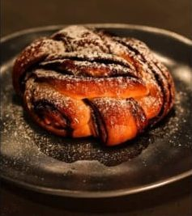
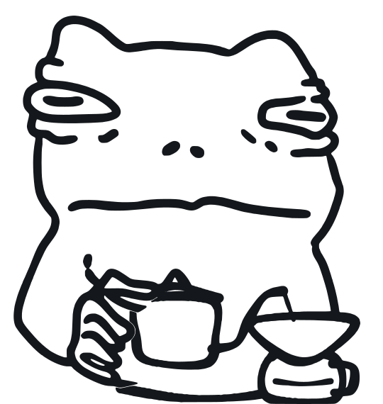
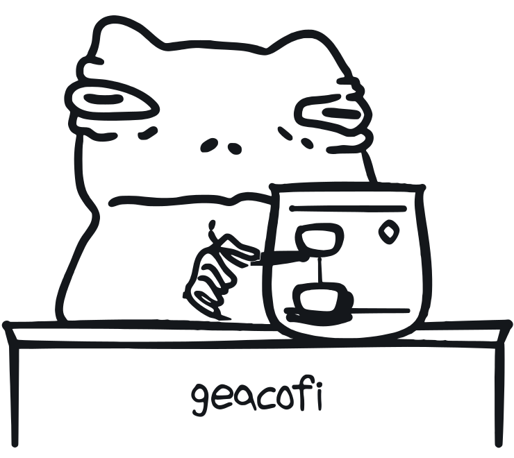

ya pasó
ya pasó
abierto · 7 a 13 y 17 a 21
café, discos y eso…
Café de especialidad en 9 de Julio 996, Corrientes. Filtrados, chipa, roll de canela y, a veces, vinilos.
la carta, lado A y lado B
el disco completo →A
Lado A
calientes
01espressoshot chiquito$ 3.700
02cortaditoespresso + leche$ 3.900
03uno y unoespresso + cortadito$ 4.100
04americanodoble espresso + agua$ 4.200
05americano cortadodoble espresso + agua + leche$ 4.800
B
Lado B
fríos
01ice lattelatte pero con hielo · opcional caramelo, vainilla o avellana$ 5.500
02espresso tonicdoble espresso + tónica$ 6.500
03affogatodoble espresso + helado de mantecol$ 7.000
04limonada$ 4.500
05jugo de naranja$ 4.500



+ bonus tracks: panadería y pasteleríaTostadores invitados
abrí un sobre, descubrí un café
En Geacofi no tostamos: elegimos. Trabajamos con distintos tostadores y siempre estamos probando cosas nuevas.
Komún TostadoresMOMOLa MotofecaLo de Pepe Tostadores
Komún Tostadores#03

Etiopía
Etiopía
Natural
MOMO#07

Rift Guji
Guji, Etiopía · Natural
mieldamascosfloral
La Motofeca#13

Motoblend
Blend de la casa
Fusion
Lo de Pepe Tostadores#14

Café de la semana
Va rotando
Preguntá en la barra
Komún Tostadores#05

Costa Rica
Costa Rica
Lavado

Edición especial
cuatro formas de colar un café
Si no sabés cuál pedir, preguntá en la barra. No hace falta saber nada.
aeropress$ 5.500
origami$ 6.000
v60$ 6.000
chemex$ 6.500
qué pasa en geacofi
Sets de vinilos, catas y pop-ups. Los anunciamos acá y en Instagram.
ya pasó ya pasó
ya pasó